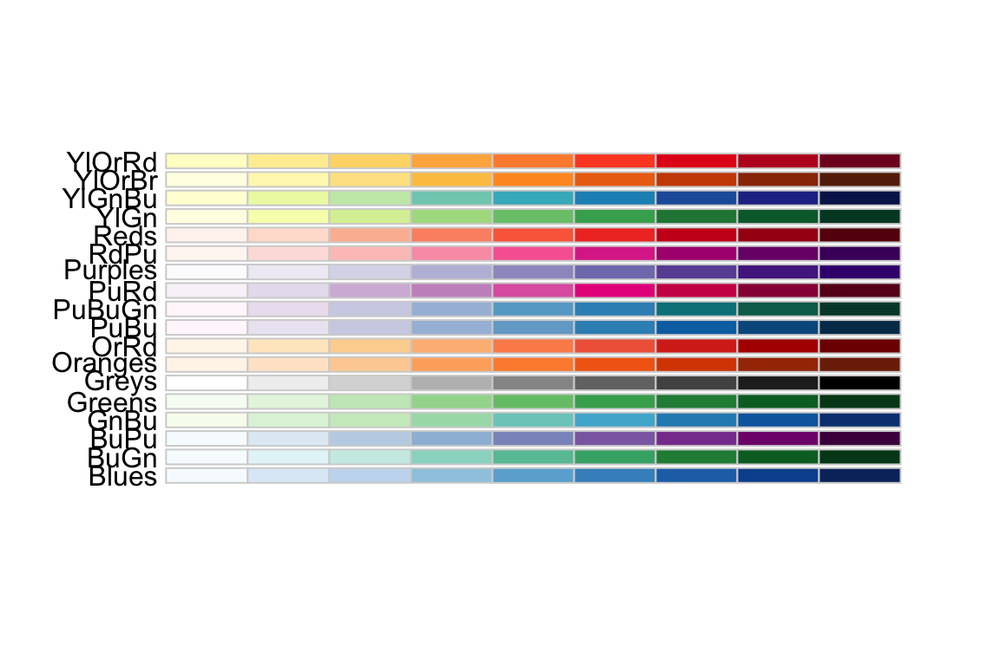
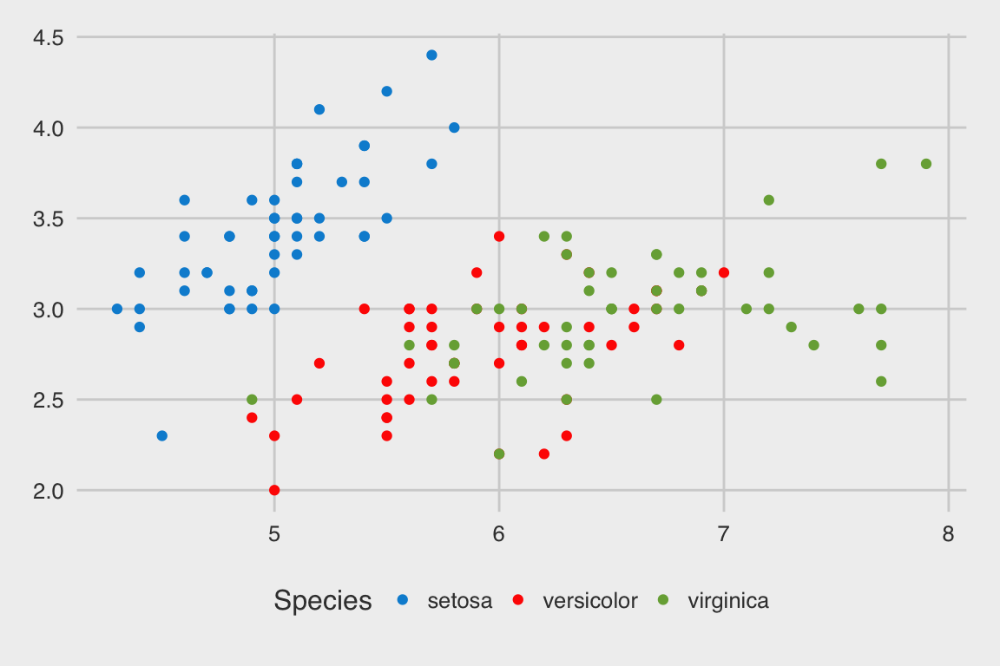

ggplot2 introduction
ggplot2is a powerful data visualisation package inR.The “gg” stands for “grammar of graphics”, which means, the codes that are producing the plots has sophisticated and rigorous logic behind it.
(From Professor Di Cook) One most important idea behind
ggplot2::ggplotis that you should think about each plot as a statistic: it is a transformation of your data. It is built to be informative. It is built to communicate insights.When you are going through this tutorial, I encourage you to challenge every plot I made. Ask the question if these plots can be improved in some ways to better communicate ideas and insights in the data.
Building up your first ggplot
Blank ggplot
ggplot2::ggplot()must interact with adata.frame.Run the code below. You should see a blank grey plot.
ggplot(iris)Adding aesthetics to ggplot
The reason that we got a blank plot is that we didn’t tell
ggplotwhat we want to see on this plot.We know that there is a column called
Sepal.LengthandSepal.Widthin theirisdata.frame, so let’s use these asxandyaesthetics.
ggplot(iris, aes(x = Sepal.Length,
y = Sepal.Width))Running the code above, we can see that these two variables are loaded onto the plot as aesthetics of the plot.
But we didn’t tell ggplot what sort of plot we want!
ggplotisn’t going to guess what plot you want! If you want a scatter plot or a tile plot, you need to tell it explicitly.
Adding geom_ to ggplot
Adding
geom_to your plot tells your ggplot you want to add a visualisation component to your data, and what kind of plot do you want.For example,
geom_point()tellsRyou want to use the previously definedxandyaesthetics to position points on your graph. i.e. you are doing a scatter plot!
myFirstPlot =
ggplot(iris,
aes(x = Sepal.Length,
y = Sepal.Width)) +
geom_point()
myFirstPlotBasic appearances of ggplot2
Automatic legend and colours
All plots should have legends, titles and axes labels.
In base R, users need to specify legend manually.
In ggplot, every aesthetics are displayed automatically.
ggplot(iris,
aes(x = Sepal.Length,
y = Sepal.Width,
colour = Species)) +
geom_point() +
# labs(x = "This is sepal length",
# y = "This is sepal width",
# title = "This is the title",
# subtitle = "This is subtitle",
# caption = "I love ggplot + cats")Facet
There are only that much things we can put on a graph: points, size, colours, text, lines, etc. And human eyes aren’t very good at perceiving too many elements on a plot. Hence, we might need to split our data in some ways to create multiple plots.
In base R, we will just run the plotting code on split data.
In ggplot, if the data can be split by some distinct categorical variables, then we can do that very easily.
ggplot(iris,
aes(x = Sepal.Length,
y = Sepal.Width,
colour = Petal.Length)) +
geom_point() +
# facet_wrap(~Species, nrow = 3)Colours
The previous plot doesn’t look very nice as the dark blue shadings do not reflect the subtle numerical differences in the variable
Petal.Length.Changing colour palette is very easy in ggplot. We will discuss this in extensive details in the next section.
ggplot(iris,
aes(x = Sepal.Length,
y = Sepal.Width,
colour = Petal.Length)) +
geom_point() +
facet_wrap(~Species, nrow = 3) +
scale_color_distiller(palette = "Spectral")Saving plots
Saving plots (without running the entire code again) could be difficult. This is particularly useful when you need graphs for publications.
beautiful = ggplot(iris,
aes(x = Sepal.Length,
y = Sepal.Width,
colour = Petal.Length)) +
geom_point() +
scale_color_distiller(palette = "Spectral")
beautiful
ggsave(filename = "myGGplot.png",
plot = beautiful,
width = 5,
height = 5,
dpi = 300)Advanced appearance of ggplot
Colouring
- Maybe you haven’t thought about this before, but how should you colour your plots? Should you choose the brightest reds and deepest blues? What about colour-blind collaborators? Generally speaking, we have three types of colour palettes.
- Categorical colours: when the colours are for distinct groups. e.g. Positive vs negative responses for cancer treatments.
RColorBrewer::display.brewer.all(type = "qual")
- Continuous sequential colours: suitable for ordered data that progress from low to high.
RColorBrewer::display.brewer.all(type = "seq")
- Continous divergent colours: put equal emphasis on mid-range critical values and extremes at both ends of the data range.
RColorBrewer::display.brewer.all(type = "div")
Have a go at this question:
irisCor = iris %>%
select_if(is.numeric) %>%
cor
irisCor## Sepal.Length Sepal.Width Petal.Length Petal.Width
## Sepal.Length 1.0000000 -0.1175698 0.8717538 0.8179411
## Sepal.Width -0.1175698 1.0000000 -0.4284401 -0.3661259
## Petal.Length 0.8717538 -0.4284401 1.0000000 0.9628654
## Petal.Width 0.8179411 -0.3661259 0.9628654 1.0000000Layered graphics
- Each geom can have a different set of aesthetics.
ggplot(iris) +
geom_jitter(aes(x = Sepal.Length,
y = Sepal.Width), width = 0.01, colour = "black") +
geom_jitter(aes(x = Petal.Length,
y = Petal.Width), width = 0.01, colour = "blue", shape = 1)- The ordering of
geommatters, so you can create more flexible plots by adding extrageomon top of each other.
ggplot(iris,
aes(x = 1,
y = Sepal.Length)) +
geom_jitter(width = 0.03) +
geom_violin(alpha = 0) +
geom_boxplot(width = 0.2) Consistent appearance using theme
In base R, if you want a series of graphs to appear consistent, you will need copy the code around
In ggplot, there are themes which you can modify globally and locally. This is particularly useful when you need graphs for publications.
ggplot(iris,
aes(x = Sepal.Length,
y = Sepal.Width,
colour = Species)) +
geom_point() +
# theme_bw()# theme_set() = theme_bw()
ggplot(iris,
aes(x = Sepal.Length,
y = Sepal.Width,
colour = Species)) +
geom_point() ggthemespackage offers extra options to manipulate the colours and theme appearances of your ggplots.
ggplot(iris,
aes(x = Sepal.Length,
y = Sepal.Width,
colour = Species)) +
geom_point() +
scale_color_fivethirtyeight() +
theme_fivethirtyeight()
An example of poor design
A picture is not worth a thousand words. A well designed statistical plot can be. — Kevin Wang
- There are several reasons as to why this plot is poor:
- Missing legend for colours
- Redundancy in plotting, the second layer of
geom_pointjust covered the first layer - The two layers of
geom_pointused different sources of data
set.seed(2)
mydata = data.frame(x = 1:1000, y = rnorm(1000))
ggplot(mydata,
aes(x = x, y = y)) +
geom_point(colour = "blue") +
geom_point(data = mydata[abs(mydata$y) > 1, ], colour = "red") +
ggtitle("Larger values are in red")- The fix is to transform your data before plotting.
set.seed(2)
mydata = data.frame(x = 1:1000, y = rnorm(1000))
mydataFixed = mydata %>%
mutate(magnitude = ifelse(abs(y) > 1, "large", "small"))
ggplot(mydataFixed,
aes(x = x, y = y)) +
geom_point() +
ggtitle("Larger values are in red")Reshaping data to suit visualisations
- Suppose we wish to visualise each column of the
irisdata as boxplots.
boxplot(iris[,-5]) ## Dropping the Species column
But what if we wish to visualise each of these four columns as boxplots, separately for each
Species?We need to reshape our data into a better format for visualisation.
We can use the
tidyr::gatherfunction to achieve this. The essential idea is to turn a “wide” data (one with a lot of columns/variables) into a “long” data (one with a lot of observations).It might seem annoying, but it is actually quite logical. For the purpose of this particular visualisation, the columns of
iris, (Sepal.Lengthetc) are not actually variables, instead, we should think of them as different types of numerical measurements.
## Initial plotting to decide which variable should be matched to which variable
gatherData = iris %>%
gather(key = measureType,
value = measureValue,
-Species)
head(gatherData)gatherData %>%
ggplot(aes(x = measureType,
y = measureValue,
fill = Species)) +
geom_boxplot() +
theme_minimal() +
theme(legend.position = "bottom")
gapminder data example
First look at the gapminder data
The
gapminderdata is collected by the Gapminder Foundation.It is a simple dataset which records life expectancy, population and GDP per capita for 142 countries spanning from the year 1952 to 2007.
glimpse(gapminder)## Observations: 1,704
## Variables: 6
## $ country <fctr> Afghanistan, Afghanistan, Afghanistan, Afghanistan,...
## $ continent <fctr> Asia, Asia, Asia, Asia, Asia, Asia, Asia, Asia, Asi...
## $ year <int> 1952, 1957, 1962, 1967, 1972, 1977, 1982, 1987, 1992...
## $ lifeExp <dbl> 28.801, 30.332, 31.997, 34.020, 36.088, 38.438, 39.8...
## $ pop <int> 8425333, 9240934, 10267083, 11537966, 13079460, 1488...
## $ gdpPercap <dbl> 779.4453, 820.8530, 853.1007, 836.1971, 739.9811, 78...The following plots aren’t particularly informative. But they can guide us through initial exploration of the data
We should see a generally increasing trend in all three measurements. But at this resolution, i.e. visualising all 142 countries all at once, does not communicate any particularly useful messages.
gapminder %>%
ggplot(aes(x = year,
y = lifeExp)) +
geom_point()
gapminder %>%
ggplot(aes(x = year,
y = pop)) +
geom_point()
gapminder %>%
ggplot(aes(x = year,
y = gdpPercap)) +
geom_point()- Due to the time series nature of these data, we should try to add some lines to our plots. For the time being, we will focus on the
yearvsgdpPercapplot.
geom_line: how to join lines
- Maybe you haven’t thought about it before, but the grouping of points are important in a line plot or a path plot. In the following plot, we quickly realise it made very little sense when we tried to join points within a year, which are just vertical lines. As a result, we can’t communicate any insights from here.
gapminder %>%
ggplot(aes(x = year,
y = gdpPercap)) +
geom_point() +
geom_line()- Now we set a group variable for our line plot. Setting
group = countriesis the most natural choice since each year and each country defines a unique row in the gapminder data.
gapminder %>%
ggplot(aes(x = year,
y = gdpPercap,
group = country)) +
geom_point() +
geom_line()We can also incorporate
continentinto the plot as colour. Here, we will use categorical colours from theRcolorbrewerpackage.This plot is becoming more informative. We can see most of the European countries are consistently well off since 1957 while most African nations are still financially poor. In Asia, things are more heterogeneous with some countries matching the GDP of Europe but also some are at the level of African nations. We will discuss how to improve this plot in the next section.
gapminder %>%
ggplot(aes(x = year,
y = gdpPercap,
group = country,
colour = continent)) +
geom_point() +
geom_line() +
scale_color_brewer(palette = "Set1") question("Before we look at how to improve this plot in the next section, do you think we should use `colour = country` in the plot above? Why and why not?",
answer("Yes", message = "Incorrect. I mean, you can always try.. But your computer might crash."),
answer("No", correct = T, message = "There will be 142 distinct categorical colours. That is too many for the human eye to distinguish")
)Thinking about the data
We note that there is one outlier nation in Asia that skewed the plot a bit. Also, the GDP is on a rather large scale, which is “squashing” the whole plot.
We could turn the entire plot into a logarithm scale, but then, humans can’t read logarithm scale very well. Thankfully, ggplot designers already thought of this!
gapminder %>%
ggplot(aes(x = year,
y = gdpPercap,
group = country,
colour = continent)) +
geom_point() +
geom_line() +
scale_y_log10() +
scale_color_brewer(palette = "Set1") Highlighting differences in continents
We see most of Europe are doing very well in history, but the majority of African nations are always at the bottom of the plot.
If we want, we can highlight construct the median GDP of each continent while also showing the nations.
One may argue there are too many features on this plot, and that is perfectly valid. It is perfectly fine to use
ggplotto inform yourself, the analyst, first; before modifying it to your client’s liking.
gapminder %>%
ggplot(aes(x = year,
y = gdpPercap,
group = country,
colour = continent)) +
## alpha controls the transparency of the geom
geom_point(alpha = 0.3) +
scale_y_log10() +
stat_summary(aes(group = continent,
colour = continent),
fun.y = median,
geom = "line",
size = 3) +
scale_color_brewer(palette = "Set1") Advanced topics
Reproducibility
In base R, it is possible to plot two (compatible) objects together, even if they don’t belong in the same
data.frame.In ggplot, by design, you cannot do this! Everything is forced to be in a
data.frame. While it might turn some people away from using it, it is actually critical in terms of reproducibility.This plotting design ensures that whatever data you are plotting is of the correct dimension and will always be a singular object.
This is opposite to plotting vector
aandtransformed.a, two objects that are 500 lines of codes apart in which case you will rely on your collaborator remembering if all transformations have been done correctly without permutation of indices.
ggplot(iris,
aes(x = Sepal.Length,
y = Sepal.Width,
colour = Petal.Length)) +
geom_point() +
scale_color_brewer(palette = "Spectral") +
facet_wrap(~Species, nrow = 3) +
geom_smooth(method = "lm")str(ggplot(iris,
aes(x = Sepal.Length,
y = Sepal.Width,
colour = Petal.Length)) +
geom_point() +
scale_color_brewer(palette = "Spectral") +
facet_wrap(~Species, nrow = 3) +
geom_smooth(method = "lm"))ggplot as a statistic
As statisticians, we are familiar with the notion of a statistic as a transformed random variable. For example, let \((X_1, \dots, X_n)\) be real valued random variables, then we can compute the mean as the summation (a transformation) of these random variables and then scale the sum by \(\frac{1}{n}\) (another transformation). And we interprete the mean as an essential property of these random variables.
We should think of ggplot as a statistic. It accepts data (
data.frame), which we can think of it as a multivariate random variable. We then specify a list of transformations (aesandgeom) to arrive at a meaningful representation of the data.The two most important considerations for plotting:
- Every plot should communicate some critical information about your data.
- Every plot should be the best form of communicating that critical information.
geom_smooth
geom_smoothwill add a smoother to the current plot. The smoother can be linear models ("lm") or robust linear model ("rlm") or loess ("loess") or gam ("gam"), generalised linear model ("glm").For this gapminder data, the linear model is particularly useful in showing the rate of GDP improvements for each continent. We can see that Africa and America are both increasing at roughly the same rate, while European and Asian nations are increasing at a much higher rate.
gapminder %>%
ggplot(aes(x = lifeExp,
y = gdpPercap,
colour = continent)) +
geom_point(alpha = 0.3) +
geom_smooth(size = 2, method = "lm") +
scale_y_log10() +
theme_bw() +
scale_color_brewer(palette = "Set1") +
theme(legend.position = "bottom")geom_text
One of the most difficult plot to produce in base
Rgraphics is to label points.In
ggplot2, this difficult task is much simpler. Bothgeom_textorgeom_labelworks well.
gapminder %>%
filter(year == 2002) %>%
ggplot(aes(x = lifeExp,
y = gdpPercap,
label = country,
colour = continent)) +
geom_text() +
scale_y_log10() +
theme_bw() +
theme(legend.position = "bottom")ggrepel::geom_text_repel
- We note in the previous plot, we still have the problem of over-plotted texts. This problem is common enough that other R developers noticed this and developed
ggplot2compatible packages for it.
gapminder %>%
filter(year == 2007,
continent == "Europe") %>%
ggplot(aes(x = lifeExp,
y = gdpPercap,
label = country,
colour = continent)) +
geom_point() +
geom_text() +
# geom_text_repel() +
scale_y_log10() +
scale_color_brewer(palette = "Set1") +
theme_bw() +
theme(legend.position = "bottom") plotly::ggplotly
- Another advantage of ggplot is that we can turn it into an interactive plot very easily using
plotly::ggplotly
p = gapminder %>%
ggplot(aes(x = year,
y = gdpPercap,
group = country,
colour = continent)) +
## alpha controls the transparency of the geom
geom_point(alpha = 0.3) +
scale_y_log10() +
stat_summary(aes(group = continent,
colour = continent),
fun.y = median,
geom = "line",
size = 3) +
scale_color_brewer(palette = "Set1")
ggplotly(p)## We recommend that you use the dev version of ggplot2 with `ggplotly()`
## Install it with: `devtools::install_github('hadley/ggplot2')`Homework
- Using the
gapminderdata, reproduce this plot. Hint: for each country, all years were used.
- Once you can construct this plot, copy the code across and add an extra global aesthetic
frame = year. Then, save this aspand executegganimate::gganimate(p). You should be visualise the plot as an animation in RStudio. If you get stuck, visit https://github.com/dgrtwo/gganimate.
library(devtools)
devtools::install_github("dgrtwo/gganimate")
p = ggplot(...aes(...frame = year))
gganimate::gganimate(p)- Compare
p + facet_wrap(~year),gganimate::gganimate(p)andplotly::ggplotly(p). Explain which plot(s) is most suitable for publishing articles, exploratory analysis and collaboration with colleagues.
## We recommend that you use the dev version of ggplot2 with `ggplotly()`
## Install it with: `devtools::install_github('hadley/ggplot2')`References
- Again,
ggplot2is so flexible that you cannot learn it from reading lecture notes. You must practise it! - There is a very large ggplot2 user community. You should be able to just Google the problem you have and reach a solution on Stack Exchange fairly easily.
- http://ggplot2.tidyverse.org/reference/
- http://r4ds.had.co.nz/data-visualisation.html
- https://www.rstudio.com/wp-content/uploads/2015/03/ggplot2-cheatsheet.pdf
Session Info
sessionInfo()## R version 3.4.1 (2017-06-30)
## Platform: x86_64-apple-darwin15.6.0 (64-bit)
## Running under: macOS Sierra 10.12.3
##
## Matrix products: default
## BLAS: /Library/Frameworks/R.framework/Versions/3.4/Resources/lib/libRblas.0.dylib
## LAPACK: /Library/Frameworks/R.framework/Versions/3.4/Resources/lib/libRlapack.dylib
##
## locale:
## [1] en_AU.UTF-8/en_AU.UTF-8/en_AU.UTF-8/C/en_AU.UTF-8/en_AU.UTF-8
##
## attached base packages:
## [1] stats graphics grDevices utils datasets methods base
##
## other attached packages:
## [1] plotly_4.7.0 ggrepel_0.6.5 tidyr_0.6.3
## [4] ggthemes_3.4.0 RColorBrewer_1.1-2 gapminder_0.2.0
## [7] learnr_0.9 dplyr_0.7.2 ggplot2_2.2.1
## [10] shiny_1.0.3
##
## loaded via a namespace (and not attached):
## [1] Rcpp_0.12.12 compiler_3.4.1 plyr_1.8.4
## [4] bindr_0.1 tools_3.4.1 digest_0.6.12
## [7] viridisLite_0.2.0 jsonlite_1.5 evaluate_0.10.1
## [10] tibble_1.3.3 gtable_0.2.0 pkgconfig_2.0.1
## [13] rlang_0.1.1 crosstalk_1.0.0 yaml_2.1.14
## [16] bindrcpp_0.2 httr_1.2.1 withr_2.0.0
## [19] stringr_1.2.0 knitr_1.16 htmlwidgets_0.9
## [22] rprojroot_1.2 grid_3.4.1 data.table_1.10.4
## [25] glue_1.1.1 R6_2.2.2 rmarkdown_1.6
## [28] purrr_0.2.2.2 magrittr_1.5 backports_1.1.0
## [31] scales_0.4.1.9002 htmltools_0.3.6 assertthat_0.2.0
## [34] mime_0.5 xtable_1.8-2 colorspace_1.3-2
## [37] httpuv_1.3.5 labeling_0.3 stringi_1.1.5
## [40] lazyeval_0.2.0 munsell_0.4.3 markdown_0.8ggplot2 Tutorial
Kevin Y. X. Wang
School of Mathematics and Statistics
School of Mathematics and Statistics